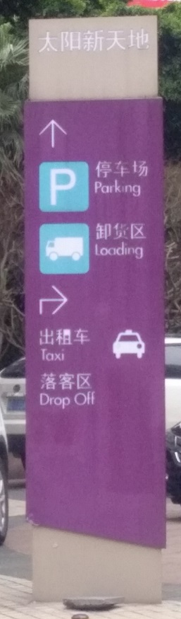
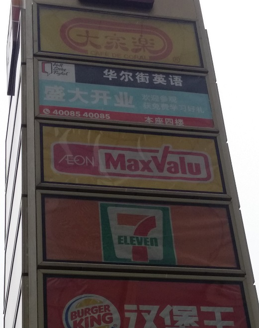
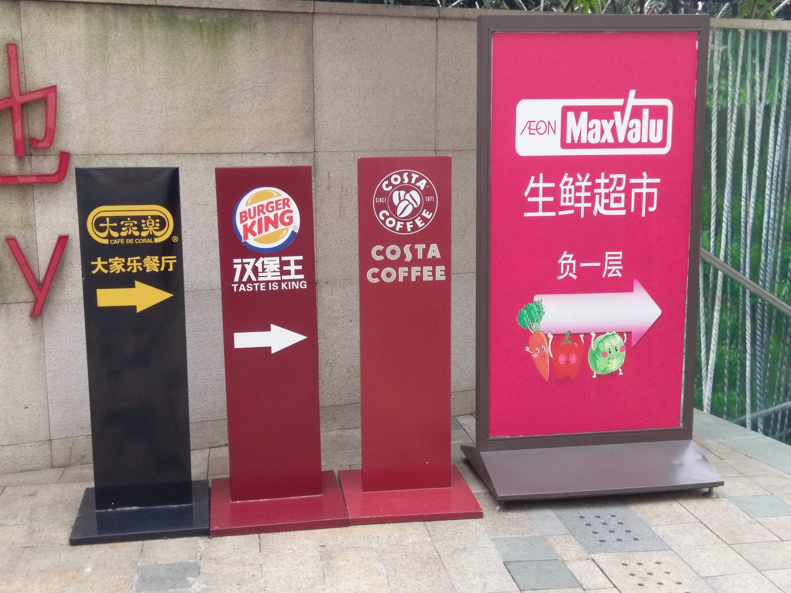
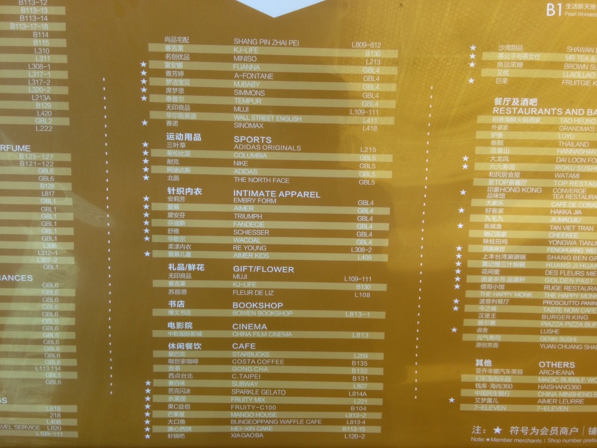
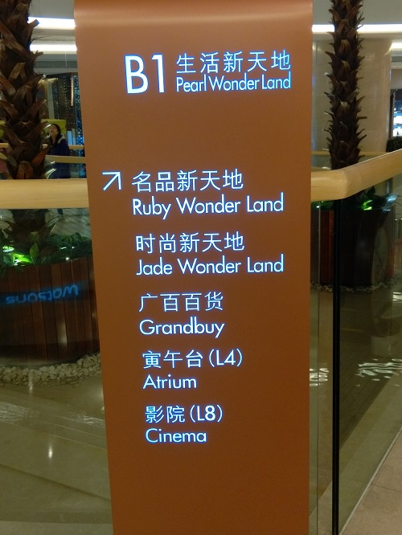
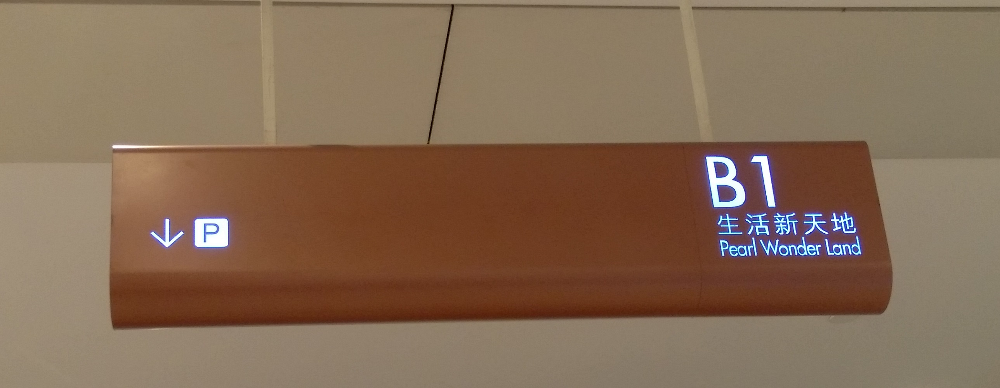

公共视觉传播
由 刘怡涛（学号：2013050146） 创建
太阳新天地商场的外部的指示牌
太阳新天地外部有不少停车场和商场入口的指示标志，指引顾客进入商场

商城楼上的店铺广告
用足够高的广告柱进行展示

地下一层的店铺的广告
用摆设在电梯口的广告牌进行展示

如果顾客想要寻找某个特定的店铺也有详细列表

商场内电梯口的指引
这是每个顾客在出入电梯口最会注意的位置
在一些地方也有比较简明的指引
这种指引一般指出了比较重要的位置，比如图中就指出了电影院等几个具体地点

指引的内容一般非常简单，有时只是一个图标

谢谢观看
Powered by Reveal.js & SinaAppEngine